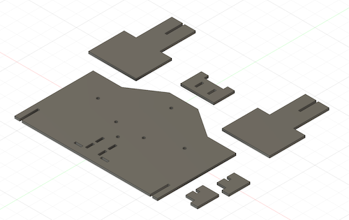

<div class="textcontainer">
<p class="margin"> </p>
<h3>Week 4: Microcontroller Programming</h3>
<p class="margin"> </p>
<div class="flexrow">
<a id="btn" href="wk4.zip" download>Download my code and CAD files from this week!
</a>
</div>
<p class="margin"> </p>
<h4>Assignment: Make an Arduino Do Something</h4>
For this week, I wanted to have my Arduino control the movement of my kinetic
sculpture. First, I had to make some edits to my sculpture so that it would
actually work. This entailed modifying the gears to attach them to the motor and
the rest of the sculpture and fabricating a new stand to mount the sculpture on.
<p class="margin"> </p>
<div class="flexrow">

</div>
<p class="caption">The re-designed cardboard stand, including notches at the bottom for a shelf to hold the motor.</p>
Once those were printed and assembled, I was able to test the sculpture with my
motor. I ran into some problems with friction -- at first, I had tightened the
various axles and hinges of my sculpture too much, so the motor couldn't turn the
gears at all. Next, the shelf I had made for the motor to sit in was causing friction
and preventing the motor from turning. Once I fixed both of those problems, I found
another issue, which was that I was having trouble fixing the center axle to
the center gear on the far side, so the motor was only turning one side of the
sculpture. I decided to leave that problem for another day, and focused on getting
the motor to work with one side of the sculpture. Eventually, I succeeded, although
I had to hold the motor in place:
<p class="margin"> </p>
<div class="flexrow">
<img src="./panthergif.gif" alt="a cardboard panther that looks like it's running">
</div>
<p class="caption">It lives!</p>
Now I could add in the Arduino part. I hooked up a simple circuit with my Arduino
Uno, my motor, a motor controller, and a few wires, and wrote a simple program to
supply power to the motor:
<pre><code style="background-color: #2d2b33;">
const int A1A = 3; // define pin 3 for A-1A
const int A1B = 5; // define pin 4 for A-1B
void setup() {
pinMode(A1A, OUTPUT); // specify these pins as outputs
pinMode(A1B, OUTPUT);
digitalWrite(A1A, LOW); // start with the motors off
digitalWrite(A1B, LOW);
}
void loop() {
// start the motor
digitalWrite(A1A, HIGH);
digitalWrite(A1B, LOW);
}
</code></pre>
I figured out that I had to reverse the direction of the motor to make the panther's
running motion go the right way, so I flipped pin A1-B to do that and then also
added some delay functions to create a pattern of motion. Here's a video of the
result:
<p class="margin"> </p>
<div class="flexrow">
<video controls>
<source src="./panther-vid.mov" type="video/mp4">
</video>
</div>
<p class="caption">The panther running on a timed delay.</p>
Lastly, I went back and added a potentiometer to my circuit to adjust the speed
the panther runs at. The motor is still not held in place well, so if I were to
come back to this design I would rethink the motor housing so it doesn't have to
be held in place.
<p class="margin"> </p>
<div class="flexrow">
<video controls>
<source src="panther_nice.mov" type="video/mp4">
</video>
</div>
<p class="caption">The final result (so far).</p>
</div>